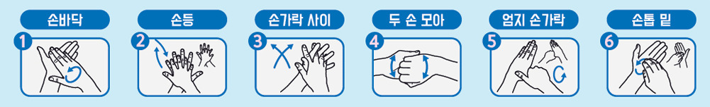

감염병 예방
감염병예방법을 사전에 충분히 습득해서 재난이 발생하였을 때 피해를 최소화할 수 있도록 대비하시기 바랍니다.
감염병 예방 시 이렇게 행동합니다.
- 감염병 예방은
- 평소에도 손을 자주, 비누를 사용하여 흐르는 깨끗한 물에 씻어야 합니다.
- 손을 씻어야 하는 때 : 외출 후, 많은 사람이 모이는 장소를 다녀온 후, 조리하거나 식사하기 전,
화장실사용 후, 기침이나 재채기 후 등
- 식수는 반드시 끓였거나 병에 든 물(생수)을 드셔야 합니다.
- 이외 요리시, 설거지시, 손을 씻거나 양치시 등에도 안전한 물, 소독된 물 사용 권고 채소류 등
식재료는 흐르는 깨끗한 물에 씻고, 충분히 가열하여 드셔야 합니다.
- 특히, 여름철 조리 음식 보관 금지, 오염된 물에 닿았던 음식 섭취 금지, 이상한 냄새가 나거나
색깔, 모양 등이 변한 음식물 섭취 금지 도마, 칼 등은 식품별 구분하여 따로 사용하고,
사용 후 깨끗이 씻고, 잘 말려서 사용해야 합니다.
- 설사 증상이나 손에 상처가 있는 사람은 조리 금지
- 특히, 설사 증상이 있는 경우 의료기관 방문 진료 권고
- 기침, 재채기를 할 경우 휴지나 손수건, 옷 소매 이용 입 가리기 등 기침 에티켓을 지키고
기침이 계속된다면 마스크를 착용을 권장합니다.
- 손으로 가급적 눈, 코, 입 만지는 것을 피하고, 집안실내 등은 청결히 하고 환기를 자주 시킵니다.
- 발열이나 호흡기 증상(기침, 목 아픔, 콧물이나 코막힘)이 있을 때에는 사람과 밀접한 접촉을
피하고 가급적 많은 사람이 모이는 장소로의 외출은 자제하시는 것이 좋습니다.
- 감염병 증상이 나타날 때는
- 설사, 발열 및 호흡기 증상이 나타날 때에는 바로 의료기관을 방문하시기 바랍니다.
 특히, 고위험군(5세 이하, 65세 이상, 임신부, 만성질환자 등) 경우 즉시 진료 권고
특히, 고위험군(5세 이하, 65세 이상, 임신부, 만성질환자 등) 경우 즉시 진료 권고
- 해외 여행객은 귀국시 발열, 호흡기 증상, 설사, 구토 등의 증상이 있을 경우 건강상태 질문서에
성실히 기재하고 검역관에게 반드시 신고하셔야 합니다.
기침예절 & 올바른 손씻기
- 기침예절
- 기침은 옷소매로 입과 코를 가리고 한다.
- 올바른 손씻기 6단계
- 흐르는 물에 비누로 30초 이상 손을 씻는다.

 교통사고
교통사고
 화재사고
화재사고
 어린이
어린이 수난사고
수난사고
 가축질병
가축질병
 댐 붕괴
댐 붕괴
 감염병 예방
감염병 예방